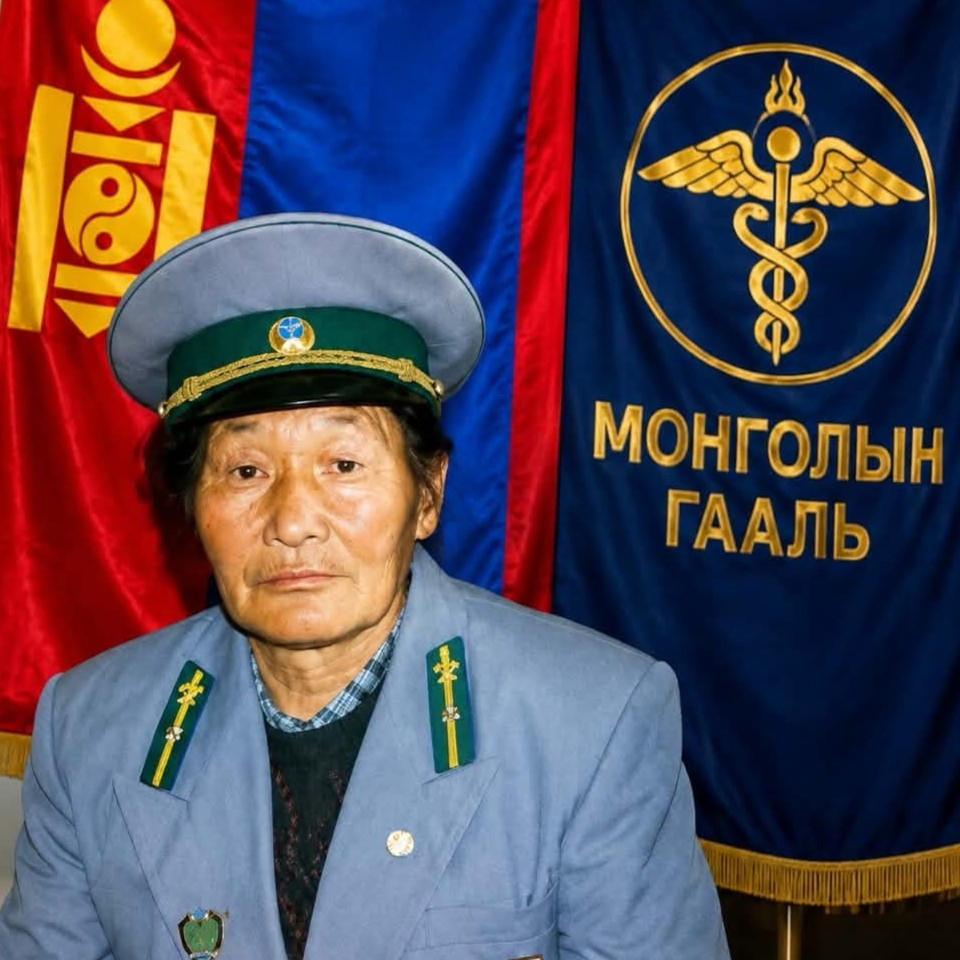
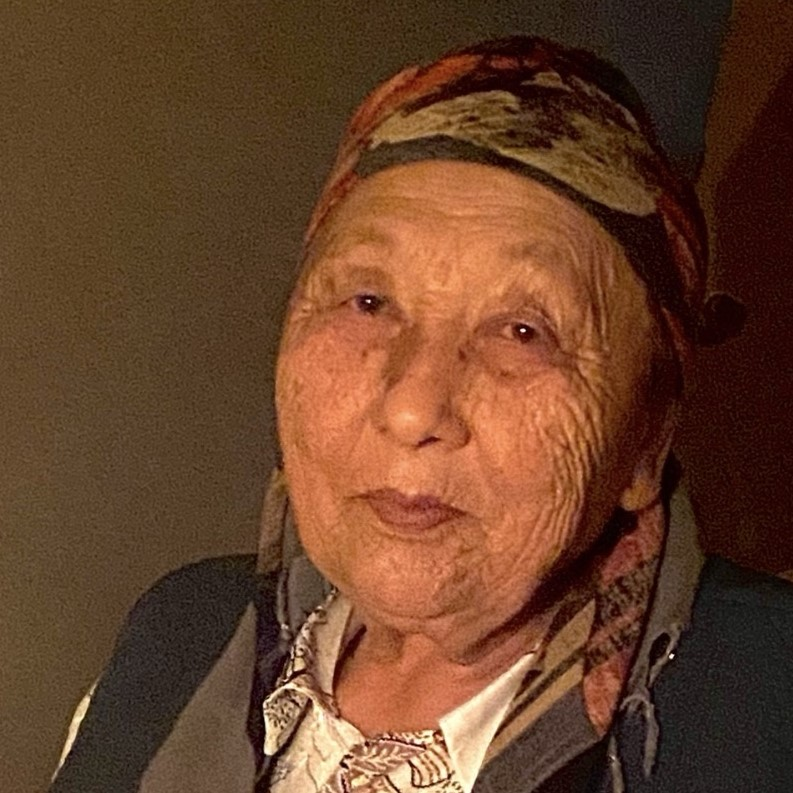
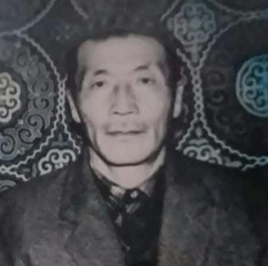
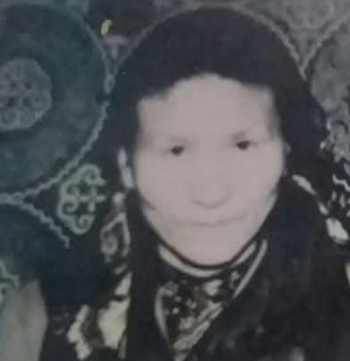
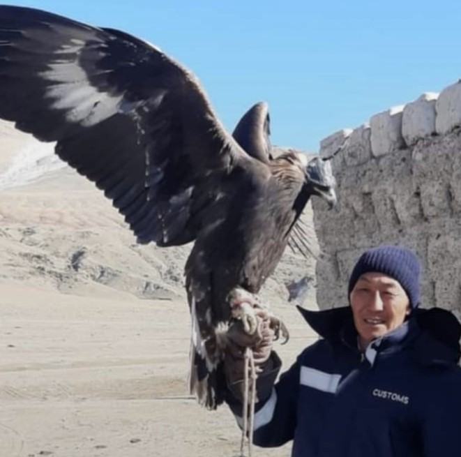
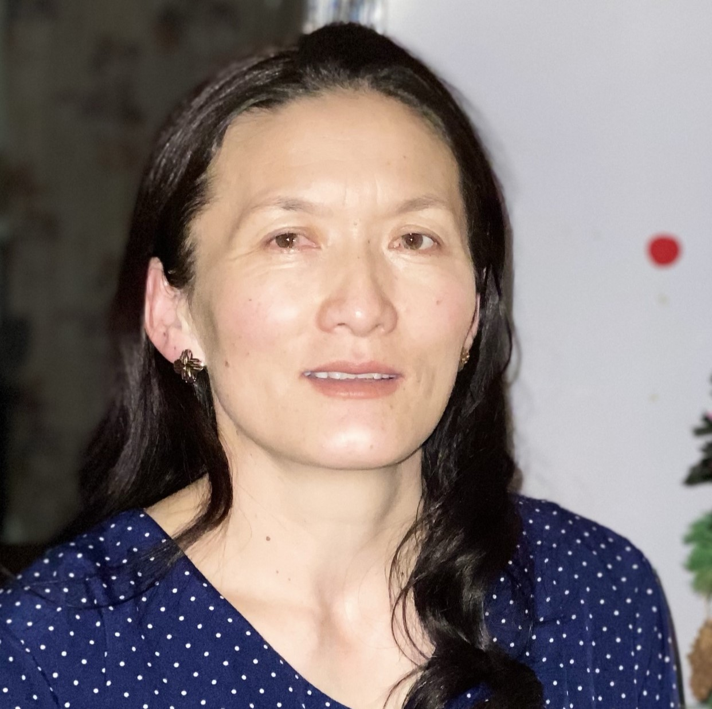
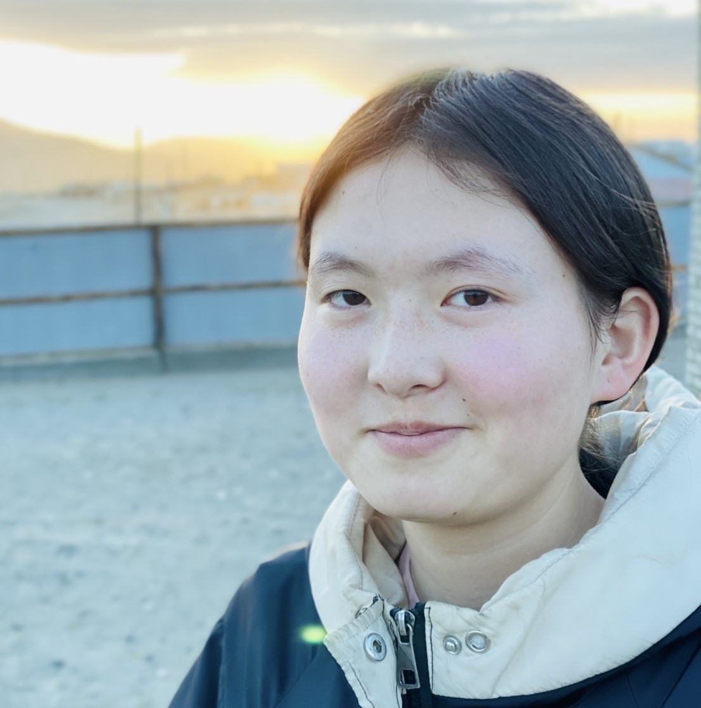
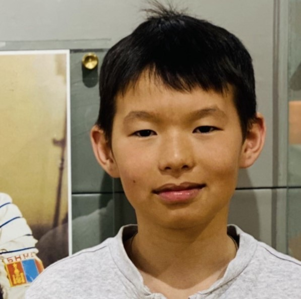

Уламжлал
Хоол идэх, ямарваа амжилт,ялалт-уналт бүрд бурханд талархах, өд болсон хүмүүсийг Баасан гарагт эргэн санаж тэдний төлөө залбирах
Гурван үе
Түүхийг үзэхХүний карт дээр дарж түүхийг нь уншина уу

Бошоол 1941 - 2001 ӨвөөМиний өвөөг Бошоол гэдэг ба эмээгийн маань ярьж байгаагаар өвөө маань 1941 онд Баян-Өлгий аймгийн Улаанхус сумын Согог багт малчин айлд төрж өссөн хүн юм. Өвөө маань тухайн үеийн 10-жилийг төгсөөд үргэлжүүлэн Улаанбаатар хотын "Багшын техникум"-ыг дүүргэн Завханд 2-3 жил багшилж , дараа нь Байн-Өлгий аймгийн Цагааннуур суманд 2 суманд багшилж байгаад цэрэгт татагдан 1966 оны намар халагдан эмээтэй маань танилцан гэрлээд базад 10 гаруй жил боловсон хүчин хийж дараа нь одоогоор бидний амьдарч байгаа газар буюу Улаанбайшинтад (Оростой хил газар) 198 оны 3-р сард ирнэ, 10 гаруй жил гаалийн дарга хийн, байцаагч хийж байгаад тэтгэвэрт ч гарч чадаагүй улсад олон жил хүчин зүтгэн намайг төрснөөс өмнө 2001 онд өөд болсон. Өвөөгөө нэр хүндтэй, маш даруу, нөмөр нөөлөгтэй хүн байсныг нь хүндэтгэн санадаг

Хамар 1943 ЭмээМиний эмээ 1943 онд Увсын Бөхмөрөн суманд төрж, 1966 онд өвөөтэй маань гэр бүл зохиогоод 1677 оноос эхлэн өлөн гэдэсний цехд ажиллаж байгаад тэтгэвэрт гарсан хүн байгаа юм. Одоогоор бидэнтэй хамт амьдарч, ач зээ нараа асарч, гэрийн минь гол нөмөр нөөлөг болж байна

Билдихан 1931 - Нагац өвөөНагац өвөө маань 1931 онд төрж, (инженер) мэргэжлээр ажиллаж байгаад намайг өрчлөөн дээр ирэхээс өмнө бурхны оронд очсон. Гэр бүлийнхэн маань түүнийг маш ухаалаг, зарчимч хүн байсан гэж үргэлж дурсдаг.

Батима 1941 - Нагац эмээНагац эмээ маань 1941 онд төрж, насаараа (багш) мэргэжлээр ажиллаж байсан бөгөөд намайг төрөхөөс өмнө нас барсан. Би түүнийг харж байгаагүй ч ээжийнхээ ярианаас маш ажилч, эелдэг хүн байсныг нь мэдэж авсан.

Нурболат 1979 АавМанай аав алсын хараатай маш ажилсаг, хөдөлмөрч хүн. Гэр бүлээ юугаар ч дутаахгүйн төлөө байгаа бүхнээ зориулж, ядарсан ч тэрийгээ харуулдаггүй маш тэвшээр хатуужилттай хүн юм. Тэр бол миний амьдралын хамгийн том баатар. Түүний ачаар би өдий хүрсэн ба надаас ямар нэгэн сайн тал олж харвал гайхах хэрэггүй. Учир нь би аавын хүү

Март 1980 ЭэжийнЭэж маань маш уужуу сэтгэлтэй, халамжтай бөгөөд гэрийн минь халуун дулаан уур амьсгалыг бүтээгч. Тэр бүх зүйлийг нарийн анзаарч, биднийг ядарсан үед хамгийн түрүүнд анзаарч, дэмждэг. Амьдралын маш олон өвчин зовлон , хатуу гашууныг үзсэн ч хэзээ ч бууж өгч, шантарч байгаагүй. Ээжийн минь надад өгсөн хүмүүжилийн ачаар би эмэгтэй хүнийг яаж хүндэтгэхийг мэддэг
Намайг Савит гэдэг. Бусдаас илүү ч үгүй дутуу ч үгүй жирийн нэг том мөрөөдөлтэй залуу гэж өөрийгөө боддог. Ирээдүйд аав, ээж маань бахархах ахан дүүс маань үлгэр дурайлал авахуйц хүн болохыг хүсдэг. Амьдрал гэх зочид буудалд өөрийн гэсэн байр сууриа олон сайхан амьдаран бусдад их тус хүргэхийг хүсдэг

Шинар 2008 ОюутанАрвайн дунд ганц буудай, 2 хүүгийн дундах ганц охин дүүг маань Шинар гэдэг. Дүү маань цовоо сэргэлэн, гэрт үргэлж баяр баясгалан бэлэглэж байдаг. Тэр өөрийн гэсэн тодорхой үзэл бодолтой, энэрэнгүй бөгөөд жоохон ичимхий зантай. Түүний инээд, эерэг энерги манай гэрийн уур амьсгалыг цаг үргэлж сэргээдэг

Жигер 2012 СурагчМанай гэрийн отгон нь, хамгийн эрх нь ч гэсэн цовоо сэргэлэн, эрч хүчээр дүүрэн залууг Жигер гэдэг. Шинэ зүйлийг маш хурдан сурдаг ба бид хоёр хамтдаа байхдаа хэзээ ч уйдахгүй, сонирхолтой цагийг өнгөрүүлдэг. Манай дүү маш creative ба биднийг үргэлж инээлгэдэг
Өвөө эмээ танилцсан
Аав ээж гэрлэсэн
Би төрсөн
Эмэгтэй дүү маань төрсөн
Эрэгтэй дүү маань төрсөн
Их сургуульд элссэн.
Хоол идэх, ямарваа амжилт,ялалт-уналт бүрд бурханд талархах, өд болсон хүмүүсийг Баасан гарагт эргэн санаж тэдний төлөө залбирах
Хэзээ ч битгий худал хэл, хулгай хий, хүний итгэлийг бүү алд. Хүнд тус болохгүй ч хор хөнөөл бүү учруул
Гэр бүлээрээ хамт идсэн бүх хоол ялангуяа бууж, хуушуур